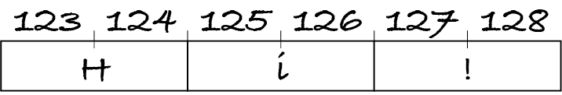
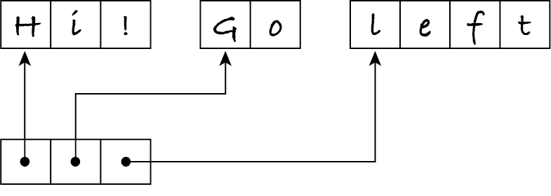
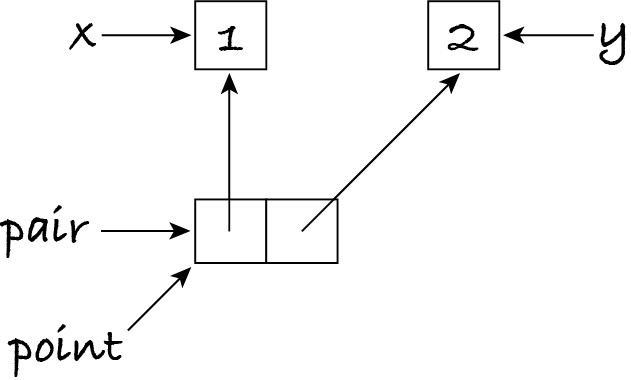

6.2. Static arrays
A static array is a data structure that stores a fixed-length sequence contiguously in memory, with the same number of bytes per item. This allows us to compute the address of any item, and thereby access it, in constant time. For example, the next figure shows a static array storing the string ‘Hi!’ from memory address 123 onwards, using two bytes per character.
The character at index i is stored at the address 123 + i × 2 and the next address, e.g. the character at index 1 starts at address 123 + 1 × 2 = 125. (Remember that indices start at zero.) More generally, if an array at memory start allocates n bytes per item, the item at index i can be found at address start + i × n and the subsequent n − 1 bytes.
Info: The term ‘array’ can mean different things (static array, list, sequence of items of the same type, etc.), depending on the author or programming language. To avoid confusions, we use ‘static array’ in M269, with the above meaning.
Static arrays are the ideal data structure for immutable sequences where all items occupy the same number of bytes, like strings and tuples of Booleans. But how to store a tuple of strings of different lengths, or a tuple with items of different types? The trick is to store in the array the addresses of the items instead of the items themselves. Let’s suppose we have \(2^{32}\) bytes = 4 GB of RAM. We can represent any memory location as a 32-bit integer. The next figure illustrates the
storage of tuple ('Hi!', 'Go', 'left'). The static array for the tuple contains the address of each string. The strings may be anywhere in memory, not necessarily next to the tuple or each other.
We usually don’t know (and don’t care) where in memory a data structure will be stored. It’s also often irrelevant how many bytes characters, addresses and other items occupy. Abstracting away those details, we can represent the tuple and its three strings in a more schematic way.
This image conveys the gist of the data structure: a string is stored as a static array of characters, and the tuple of strings is stored as a static array of references to those strings. A reference is an object that refers to another object. If the reference consists of the memory address of that other object, we call it a pointer.
Before continuing with static arrays, let me illustrate how the use of references explains the behaviour of assignments in Python.
6.2.1. Variables and assignments
There are other kinds of reference objects. An index is an integer object that refers to a particular item of a sequence. A variable is a named reference to an object: you can think of it as a string–pointer pair with the name of the variable and the address of the object it refers to.
Consider the following example, which uses a list instead of a tuple.
[1]:
x = 1 # the x-y coordinates of a 2D point
y = 2
pair = [x, y]
point = pair
Assuming that lists are also stored as static arrays, the situation in memory at this stage is as follows:
Names pair and point refer to exactly the same list object, pair[0] and x refer to the exact same integer object with value one, and pair[1] and y refer to the same integer object with value two. Let’s change the value that y refers to:
[2]:
y = 3
The Python interpreter does not change the value of the existing integer object. Instead, it creates a new integer object with value three, and makes the variable refer to that object. In Python, variable = value ‘attaches’ the variable’s name to the value, rather than modifies the current variable’s value. The data structures look now like this:
Hence, if we display the list, it hasn’t changed:
[3]:
point
[3]:
[1, 2]
If we do this assignment,
[4]:
pair[1] = 3
then the interpreter again creates an integer object with value 3 and makes the name pair[1] refer to that object. The situation is now:
Let’s display again the point’s coordinates:
[5]:
point
[5]:
[1, 3]
They have changed, even though the assignment was to pair[1], not point[1]. The earlier assignment point = pair created a new reference to the same list, it didn’t create a copy of the list.
Info: TM112 Block 2 Sections 4.5.1 to 4.5.3 explain the above in more detail.
The diagram also shows that the integer object with value two isn’t referred by any other object anymore. The Python interpreter detects that automatically, and frees the memory occupied by the object so that it can be reused later. This process is known as garbage collection.
6.2.2. The StaticArray class
Some languages provide a static array data type to implement a restricted form of the sequence ADT, namely fixed-length sequences of items of the same type. Besides the length of the array, one has to indicate the type of items. This allows the interpreter to figure out how many bytes per item are needed and the initial value of each item, to then create the static array in memory. For example, an array of Booleans may be created with one byte per Boolean, each initialised to false, whereas an array of strings may be created with pointers to the same empty string.
Info: Java has a static array data type, simply called array, with indices starting at zero. The type of items is indicated when the array is declared and the length is determined when the array is initialised. Java arrays can have items of different types if the declared item’s type is Object.
A data type for static arrays only has to support three operations, besides the constructor: length, indexing, and replacing an item. All other operations, e.g. slicing, can be implemented with these basic operations.
Python doesn’t include such a data type as it already has a far more flexible one: lists. The implementation of lists may differ between Python interpreters, because the Python language only defines the list as an ADT, i.e. which operations it supports. However, it’s safe to assume all interpreters use static arrays as the underlying data structure in order to achieve constant-time indexing. We can thus use lists as if they were static arrays providing we never call methods append,
insert and pop. I will however define a new data type, to make the use of static arrays explicit in subsequent examples.
I won’t restrict my static array data type to any particular type of items. The constructor simply takes the length of the array, and initialises it with None in every position. The essential operations on an array are to obtain its length, and to access and replace an item at a given index. Following my definition of the indexing operation, I assume indices aren’t negative. For convenience I also implement an operation to
convert to a string.
I write the class to a file to reuse it later.
[6]:
# this code is also in m269_array.py
class StaticArray:
"""A fixed-length sequence of references in contiguous memory."""
def __init__(self, length: int) -> None:
"""Create an array of the given length.
Preconditions: length >= 0
Postconditions: every item in the array is None
"""
# assume lists are stored in arrays
self.items = [None] * length
def length(self) -> int:
"""Return the length of the array."""
return len(self.items)
def get_item(self, index: int) -> object:
"""Return the item at the given index.
Preconditions: 0 <= index < self.length()
"""
return self.items[index]
def set_item(self, index: int, item: object) -> None:
"""Replace the item at the given index with the given item.
Preconditions: 0 <= index < self.length()
Postconditions: self.get_item(index) == item
"""
self.items[index] = item
def __str__(self) -> str:
"""Return a string representation of the array."""
return str(self.items)
In Python, every object is an instance of a class appropriately named object. All other classes are subclasses of object. Class A is a subclass of class B, and B is a superclass of A, if every instance of A is also an instance of B. Using object in a method or function header indicates that the input or output value can be any object. As such, the method or function body can only use the equality and inequality comparisons or assign the object to a variable.
6.2.3. Testing methods
Our generic test function is meant for testing functions with a single output that can be easily compared against an expected value. However, class methods sometimes modify an instance variable instead of returning a value, like set_item above. We need a different approach.
White-box tests, also known as structural tests, have full knowledge of the data structure(s) used by the data type. Structural tests can be written independently for each method, as they can access the instance variables before and after the method to check they were correctly modified. The disadvantage of structural tests is that they must be rewritten whenever the data structures change.
Black-box tests, also known as specification-based tests, don’t access the data structures. They test methods based on their defined behaviour. This means that methods can’t be tested independently: a method that changes data can only be tested with methods that inspect data. Black-box testing makes regression testing easier. That’s the process of running the same tests after each change, to make sure the modified code still behaves as before.
For example, a white-box test of the __init__ method can iterate over the self.items list to check all items were initialised to None, whereas a black-box test has to use method get_item.
In M269 we’ll use mostly black-box testing: a single set of tests, based on the ADT’s operations, can be run repeatedly to test different implementations of the same ADT. This saves work and time.
To make test code shorter and more readable, I define an auxiliary function for the error messages and write it to a file to reuse it later.
[7]:
# this code is also in m269_test.py
def check(case: str, actual: object, expected: object, context: object) -> None:
"""Write a message if actual and expected are different."""
if actual != expected:
print(case, "FAILED for", context, ":", actual, "instead of", expected)
The context is some additional information to help us make sense of the error. In the following, the context is the static array for which the test failed.
Let’s start by testing the initialisation method for an arbitrary array length. We must check it has created the right number of items, all of them None.
[8]:
def test_init(length: int) -> None:
"""Create a new array of the given length and check it.
Preconditions: length >= 0
"""
array = StaticArray(length)
check("length", array.length(), length, array)
for index in range(0, length):
check("initial item", array.get_item(index), None, array)
The black-box test uses methods length and get_item to inspect the created instance. As such, we’re also testing these methods besides __init__.
We also test set_item by creating an array and checking it with get_item. I often use the sequence 0, 1, 2, … for testing, because if a test fails it’s easy to see which value is not at the right index.
Note: When testing operations on sequences, use sequences of the form (0, 1, 2, …).
[9]:
def test_set_item(length: int) -> None:
"""Create an array of the given length, replace all items and check it.
Preconditions: length >= 0
"""
array = StaticArray(length)
for index in range(length):
array.set_item(index, index)
for index in range(length):
check("replaced item", array.get_item(index), index, array)
This only tests set_item with an array of items of the same type. In general, you may need several test functions for one method. It’s not unusual for test code to be longer than the code it tests.
I can now test arrays of different lengths. The check function will print every array that fails a test.
[10]:
test_init(0) # edge case: length zero
for length in range(1, 11):
test_init(length)
test_set_item(length)
In testing, no news is good news.
Note: To black-box test a class, write one or more test functions for each method that creates or modifies an instance of that class, using the methods that inspect the instance. Together, the tests must use all inspection methods.